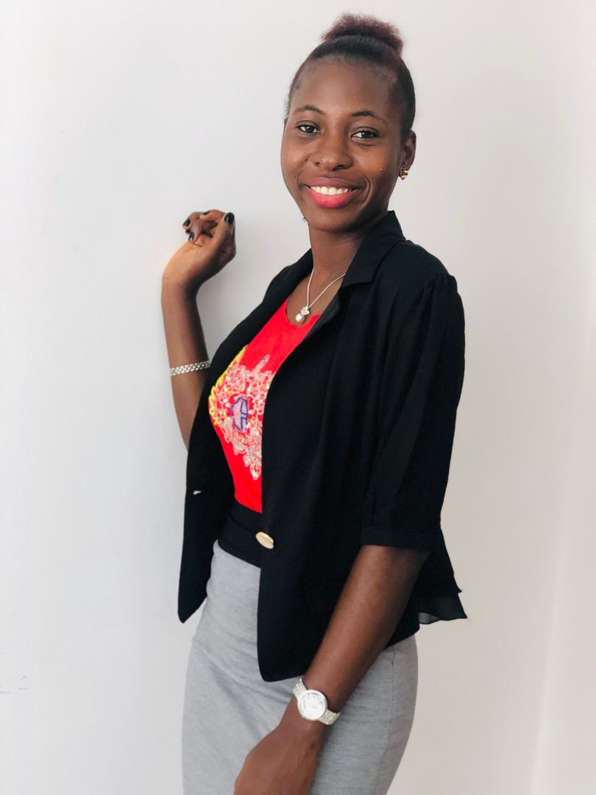

Harilyn Sia Brima

Summary
With a passion for learning and exploring, I am an enthusiastic and curious person, with an experience in project management. As a detail-oriented project assistant, with a desire to turn ideas into reality, I thrive in organizing and coordinating tasks to ensure smooth project execution. Working in this role has allowed me to develop excellent time management and communication skills, which I believe are essential for success in any field.
However, my true passion lies in web development. I'm on a determined path to become a skilled web developer, and I'm already honing my skills in
HTML while being eager to bring my coding skills to life by creating captivating websites that combine functionality with aesthetics.
Combining my project management expertise with my web development aspirations, I aim to create impactful digital solutions that leave a positive mark on the online world.
Education
- Bachelor of Arts in Education, French/Linguistics - Njala University (2014-2018)
Work Experience
Programme Assitant - The Energy Nexus Network (TENN)
July 2023 - Present
- Assisting in the coordination and management of projects, ensuring that tasks are completed on time and within budget.
- Maintaining project documentation, including project plans, meeting minutes, and progress reports.
- Facilitating effective communication among team members, stakeholders, and clients to ensure everyone is informed about project updates.
- Providing general administrative and logistical support to project teams as needed.
Project Manager - JaSiLe Foundation
June 2019 - June 2023
- Project Planning and Execution:
- Coordinating with cross-functional teams to ensure smooth project execution.
- Conducting regular project status meetings and providing timely updates to stakeholders.
- Stakeholder Management:
- Building and maintaining strong relationships with stakeholders to ensure project success.
- Communicating project objectives, progress, and challenges effectively to stakeholders.
- Addressing stakeholders' concerns and managing their expectations throughout the project lifecycle.
- Risk Management:
- Implementing risk response strategies and managing risk documentation.
- Creating contingency plans to address unforeseen issues or changes in project scope.
- Budgeting and Financial Management:
- Developing project budgets, tracking expenses, and ensuring adherence to budgetary constraints.
- Monitoring financial resources and making necessary adjustments to optimize project costs.
- Providing accurate and timely financial reports to stakeholders.
Skills
- Technical Skills:
- Proficiency in Microsoft Office and Google Suite.
- Familiarity in setting up websites and managing official social media handles.
- Project Management Skills:
- Project planning, organization, and execution.
- Budgeting and financial analysis.
- Stakeholder engagement and communication.
- Leadership and Management Skills:
- Delegation and task management.
- Conflict resolution and negotiation.
- Change management and adaptability.
- Communication Skills:
- Verbal and written communication.
- Presentation and public speaking.
- Interpersonal skills and relationship building.
- Fluency in English Language.
- Advanced knowledge in reading, writing, listening and speaking in French Language.
- Adaptability and Flexibility:
- Work independently and under minimum supervision.
- Openness to change and willingness to learn.
- Agility in responding to unexpected situations.
- Organizational Skills:
- Time management and prioritization.
- Meeting deadlines.
Certifications
- Communications Foundation - LinkedIn Learning (October 2020)
Other